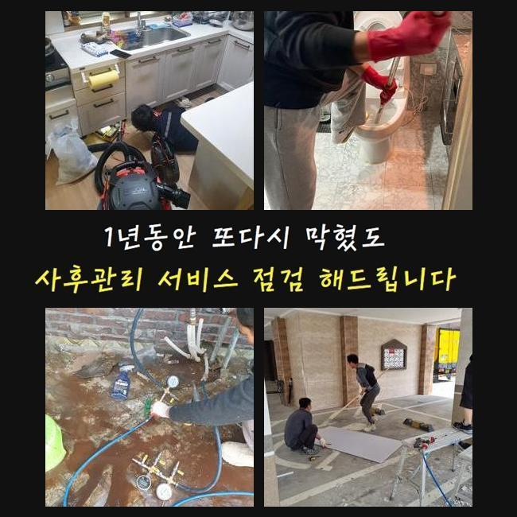
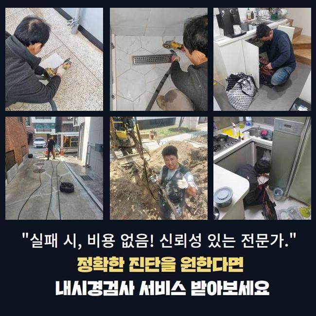
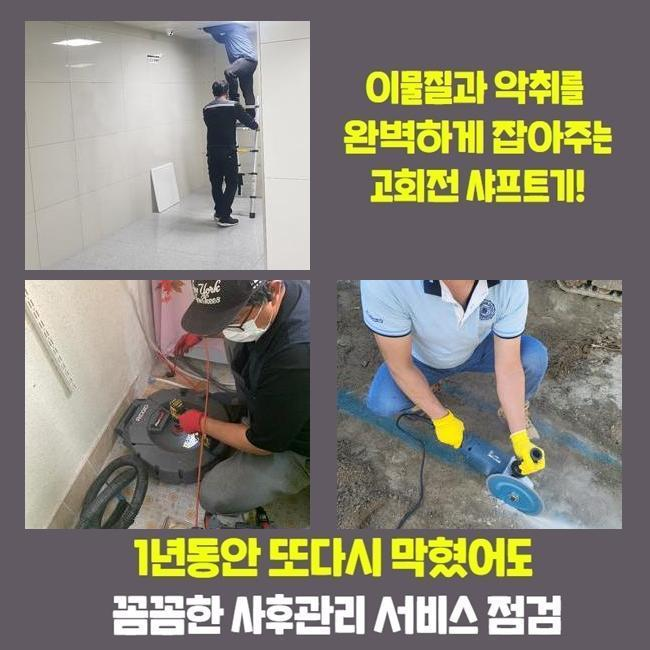
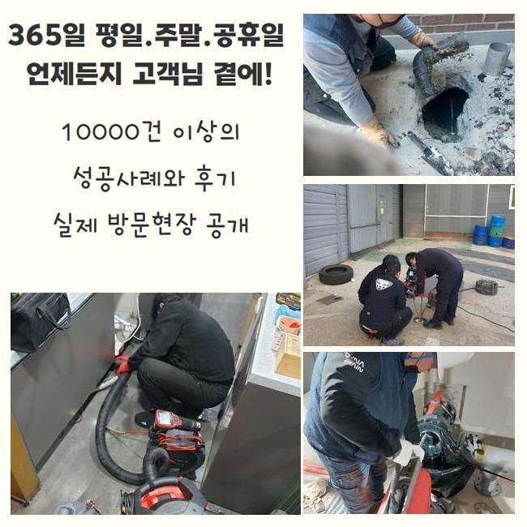
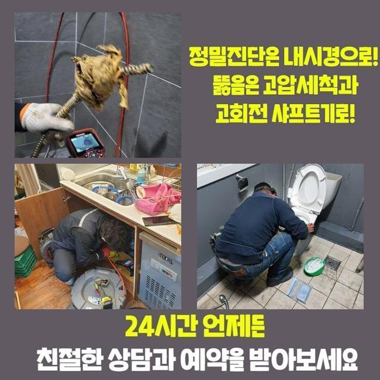
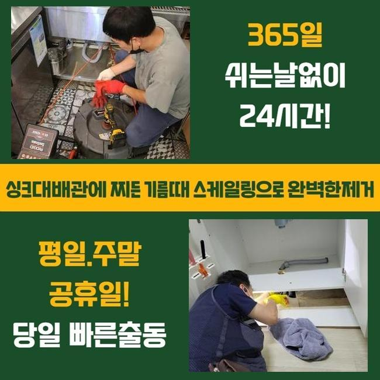
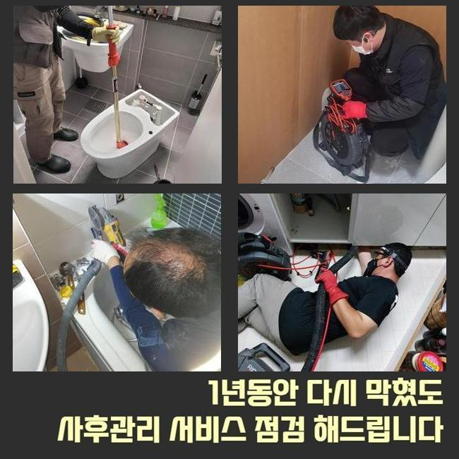

🏠 성남 수진동하수도역류 고등동 배수구뚫기 설비공사
성남 하수구막힘 전문 시공 후기

📋 작업 개요
- 위치: 성남
- 서비스 유형: 하수구막힘, 배관막힘, 집수정막힘, 역류해결, 뚫는업체, 배관청소, 설비공사
- 작업 일시: 2025. 2. 7. 16:38
- 업체명: 하수구수사대 (010-5615-2118)
🔍 문제 상황
성남 수진동하수도역류 고등동 배수구뚫기 설비공사
공동 주택 내부에 설치 되어있는 하수시설을 관리하지 않고 사용하시면 노폐물이 쌓여 하수라인의 역류문제가 발생할 일들이 많아집니다
이러한 이유로 연식이 오래 되신 경우엔 주기적으로 하수시설의 문제를 확인해봐야 해요
점심쯤이 지나서 고객분께서 배수구가 막혀 역류가 발생한다고 문의를 해주셨습니다
이번 현장은 마을과는 떨어져서 외진 곳의 주택이였고 주변에는 캠핑업체가 영업을 하고있는 상태였어요
건물을 올리신지 몇 년 되지도 않았는데 바깥에서 역류상황이 자주 보인다고 하셨어요
확인해본 결과로는 창고안에 설치된 집수정이 밖에 위치한 정화조로 흘러가는 방식이였어요
정화조가 위치한 곳이 꽤 멀어서 창고에 설치하는게 가장 낫다고 하셨대요
사례자님께 막혀있는 지점들을 찾는다해도 중간부분에 점검구가 없는 경우라면 장시간 작업을 해야한다고 설명 해드렸더니 동의를 해주셨습니다
집수정쪽에서 내시경장비를 집어넣었으나 이물질들이 너무 많아 더이상 라인을 넣을 수가 없었습니다

🔎 원인 분석
💡 전문가 진단: 정밀 진단 장비를 사용하여 슬러지의 고착 여부를 판명하고 타격/세척 작업을 실시했습니다.
불순물이 가득 차있는 모습을 고객분에게도 보여드리며 설명 해드렸어요
샤프트기기로 시공을 이어나갔어요
장비에 머리카락들과 물티슈들이 끝도없이 엉켜서 빠져나왔어요
연립주택의 막힘문제의 이유는 물티슈와 머리카락등이 제일 많이 나옵니다
의뢰인분께 물을 제외한 모든 이물질은 분리하여 배출하시라고 설명드렸어요
화학재질의 물티슈는 종이로 만든게 아닌 플라스틱 성질이므로 물과 만나 녹는게 아니예요
요즘엔 녹는 것도 있지만 한번에 많이 사용하시면 하수라인이 점차 막히면서 역류현상이 나타날 수 있습니다
하수관 내부에 있는 노폐물과 합쳐져 슬러지화 되어 막힘문제를 일으킵니다
하수시설을 이용하실땐 물티슈와 작은 쓰레기 등은 따로 버리는 습관을 가져야해요
배수라인은 하수만을 다루는 시설인 것을 기억하셔서 이물질등은 따로 처리하셔야 해요

🔧 작업 과정
다음엔 창고로 이동하여 내시경기기를 재투입 했어요
하수관이 매우 긴 경우라서 내시경기기계가 끝쪽까지 들어가는게 불가하여 쏜드기를 투입했습니다
막힌 부분쪽에 반복적으로 노폐물 제거를 진행했어요
집수정과 동일하게 머리카락 외에도 물티슈가 계속해서 올라오는걸 보시고 사례자님께서도 중대한 상황이라는걸 인지하셨다고 하셨어요
저희 전문진에게 동일한 문제가 발생하지 않을 수 있는 사용법을 알려달라고 말씀하셔서 안내 해드렸어요
보통 사용하시면서 작은 쓰레기 같은건 흘러갈 것이라고 생각하시겠지만 구배상 환경요건이 좋지 않은 경우에 내부에 노폐물도 있어서 머리카락등이나 조리시에 발생하는 기름들을 그냥 버리면 문제가 생깁니다
내시경장치를 사용해서 이물질들이 모두 배출되었는지 확인했습니다
정화조와 집수정의 양쪽에서 체크를 하였고 남은 불순물 하나없이 깨끗한 상태가 보였어요
의뢰인에게도 보여드렸더니 안심 되신다고 하셨어요
대부분은 산성약품을 통해서 쉽게 해결을 할 수 있다고 생각하시는 분들도 있지만서도 그런 방법은 옳지 않아요
의뢰인께서 이용하실때 찌꺼기를 흘려보내지 말고 다세대주택의 연식이 오래 되신 경우엔 전문 업체에게 맡겨 정기적인 검사를 진행하시는걸 추천합니다
그냥 방치하시면 역류사태까지 진행되며 큰공사를 피할 수가 없어서 비용적인 부담이 커지게 됩니다
앞서 말씀드린 것처럼 하수관도 그냥 방치할수록 비용적인 고객님에세 부담되는 부분이 증가하다는걸 알고 계셔야 합니다
작업이 종료된 후에도 작업지 주변을 마무리하며 청소를 진행했습니다
오래된 이물질들로 심한 악취가 발생해서 특수세제로 청소하고 호스를 연결한 후에 대청소까지 완료했습니다
원래 이러한 현장에서 주변 장소까지 저희 전문진이 청소 해드리는 일은 없었습니다


✅ 작업 완료
오늘 현장의 경우에 악취가 매우 심한편이라서 지나치지 못했습니다
저희 전문 기술진은 배수관 속의 머리카락들은 당연하고 하수관의 침전물을 제거하고 하수의 흐름 방향이 잘 나오는 것까지 최종확인을 반드시 진행합니다
의뢰인분께서 저희 전문가를 믿어주시길 바라며 관련하여 알고 싶으신 경우라면 언제든 전화주세요
하수시설의 문제점을 조금 더 나은 방법으로 해결하시고자 한다면 신속정확함이 최선임을 알고 계셔야 합니다
일상 생활 속에서 위와 같은 문제현상이 발생하지 않아야 하지만 혹시라고 일어났다면 신속하게 전문적인 업체에 연락시는게 좋아요




⚠️ 하수구 배관 막힘 예방 및 관리 가이드
- ✅ 머리카락, 비닐, 물티슈 등 물에 분해되지 않는 이물질은 하수구 유입을 절대 금지해 주세요.
- ✅ 하수구 거름망을 씌우고 모여진 이물질은 주기적으로 쓰레기통에 바로 비워주셔야 합니다.
- ✅ 배관 노후가 심할 경우 이물질이 더 쉽게 걸리므로 주기적인 배관 세척(고압세척 등)을 권장합니다.
- ✅ 작업 후 1년 이내 재발 시 하수구수사대에서 무상 A/S 보증 서비스를 제공합니다.
💡 핵심 정리
- 확실한 장비 작업(내시경 점검 및 샤프트 스케일링)으로 원인을 뿌리 뽑습니다.
- 작업 후 1년 이내에 동일한 부위 재발 시 100% 무상 A/S 서비스를 보장합니다.
- 서울 · 경기 · 인천 전 지역에 24시간 언제든 긴급 출동할 수 있도록 항시 대기 중입니다.
❓ 자주 묻는 질문 (FAQ)
🚨 성남 하수구막힘 문제로 고민이신가요?
정확한 원인 진단과 확실한 시공으로 재발 없는 해결을 약속드립니다.
24시간 긴급 출동 | 서울 · 경기 · 인천 전지역 | 1년 내 재발 시 무상 A/S